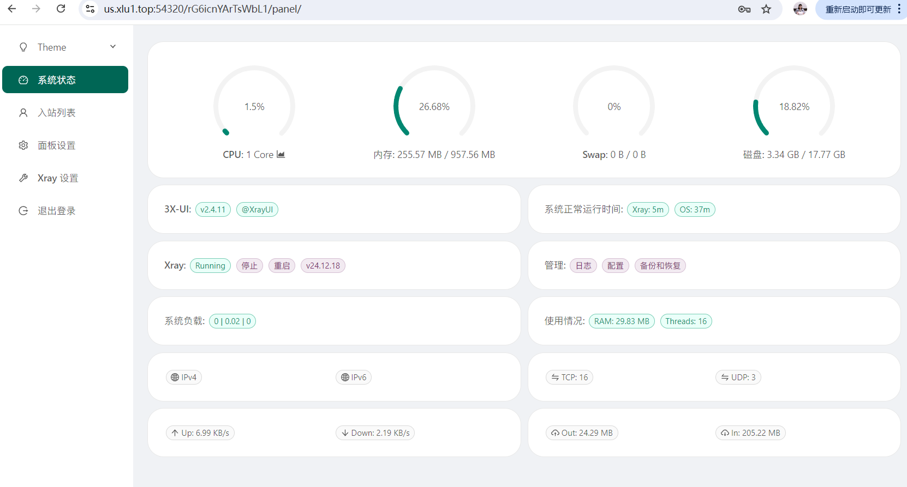
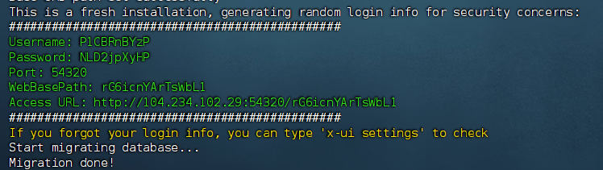
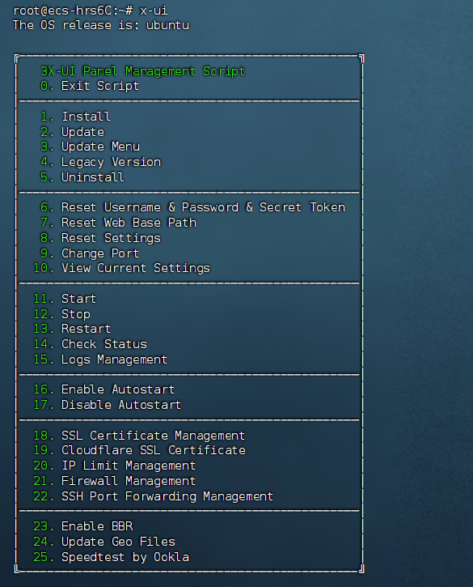
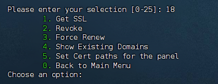
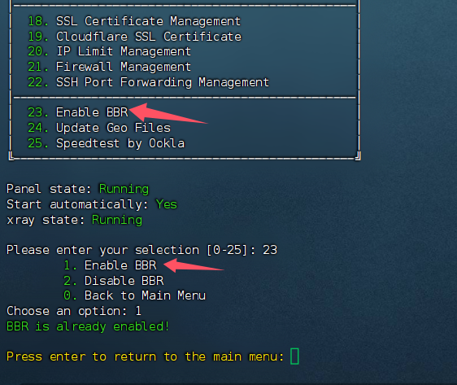
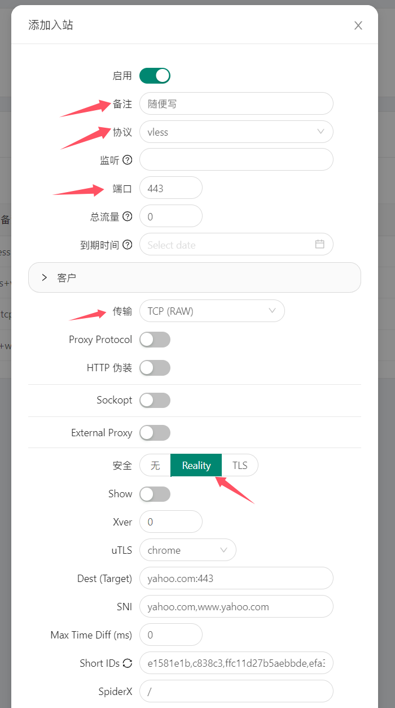

🕓2025年1月28日
视频教程：▶https://youtu.be/BzjNZFCvBcY
一、什么是3x-ui
3x-ui是一个支持多协议、多用户的Xray面板，具有过期日期、流量和IP限制功能。它能够同时支持Vmess、Vless、Trojan、
ShadowSocks和Wireguard等多种协议，为用户提供更灵活的选择。通过该面板，用户可以轻松管理多个用户账户，设置过期日期和流量限制，同时对IP进行限制，确保服务器资源的合理利用和安全性。
Xray面板的这些功能使得它成为搭建和管理代理服务器的理想选择，特别适用于需要高效管理和安全控制的场景。
3X-UI开源项目地址:https://github.com/MHSanaei/3x-ui
3X-ui 面板特点

二、准备工作
1、域名一个，并托管到 Cloudflare
推荐在 Namesilo 进行购买（新用户1美元优惠券：kejixiaolu），因为他的 WHOIS 隐私 是免费的，可以适当的进行一下隐私保护，而且域名还都挺便宜的。（域名可以在 Namesilo 解析，也可以将域名托管到 Cloudflare ，解析更快。）
检测服务器IP是否被封，确认IP可用。
已经解析的域名，Win+R 输入 CMD 回车：键入ping 空格输入你的域名，检查一下是否可以 ping 通。
2、一台境外 VPS 主流系统。
例如：Debian 11+ / Ubuntu 20.04+ / CentOS 8+
六六云VPS注册网址：https://kjxl.cc/666clouds（双ISP，支持tiktok）
全站九折优惠：XL666
年付七折优惠：year30off
Vultr 注册网址：https://kjxl.cc/vultr
（按时计费，最低6$/月。）
3、下载并安装 FinalShell SSH 工具
Windows、macOS、Linux 版下载地址：点击下载
三、开始安装使用3x-ui
3.1、一键安装依赖包
更新及安装组件。下面环境的安装方式，大家根据自己的系统选择命令安装就好了。
1、Debian/Ubuntu系统：
复制 sudo apt install git -y
2、CentOS系统：
复制 sudo yum install git -y
复制 sudo apt update -y
（CentOS系统）
复制 sudo yum update -y
3.2、一键安装脚本
复制 bash <(curl -Ls https://raw.githubusercontent.com/mhsanaei/3x-ui/master/install.sh)
在运行脚本以后，会提示你Would you like to customize the Panel Port settings? (If not, a random port will be applied) [y/n]:
这里的意思是：您是否要自定义面板端口设置？（如果不想，将应用随机端口），建议输入y进行自定义配置。
Please set up the panel port: 后面输入你要设置的面板端口
然后就安装完成了，下面会出现3x-ui面板URL地址、设置的端口、随机生成的用户登录信息。建议将信息保存下来，后面登录用。

3.3、申请SSL证书
以后想要在ssh连接里面进行3x-ui的设置，只需要输入 x-ui 然后回车就会出现3x-ui的管理面板，如下：

输入数字 “18” SSL 证书管理，，接下来输入“1” Get SSL，开始申请证书，注意：这里需要放行80端口。

按照提示输入解析好的域名并确保域名能ping通，在运行脚本以后，会提示你“Would you like to set this certificate for the panel? (y/n): ”这句话意思是问你：您想为面板设置此证书吗？这里我们输入“y”为面板设置刚申请的证书。
3.4、关闭防火墙/放行端口
关闭防火墙 #
复制 sudo ufw disable
需要放行的端口 #
例：如需放行80端口，代码：ufw allow 80
复制 ufw allow
四、X-ui 面板登录
在浏览器输入3x-ui面板URL地址，在下方的语言设置里面设置为中文。然后输入你的用户名和密码进入。
五、 BBR 加速
SSH 里面可以输入x-ui操作命令，输入“23” 启用 BBR ，根据提示再输入1，BBR就启用了

验证 BBR 是否成功启用：
执行以下命令，确认 BBR 已被启用：
复制 sysctl net.ipv4.tcp_available_congestion_control
输出结果应包含 bbr，表示 BBR 已成功启用。
六、配置节点使用
6.1、节点配置
注意：搭建节点如果不能上网，记得要放行节点端口。

节点配置及功能方面，请看 视频教程
6.2、客户端
Windows（v2rayN）：https://github.com/2dust/v2rayN
Android（v2rayNG）：https://github.com/2dust/v2rayNG
IOS（shadowrocket）：https://apps.apple.com/app/shadowrocket/id932747118
七 、IP纯净度检测
连接节点IP，保证whoer检测100%
打fwhoer.net,
检查伪装度和时区
打开bgp.he.net，再次检查是否为原生IP。
首先打开bgp.he.net ，自己的服务器，肯定都知道机房位置的，所以我们要做的就是看下这个IP的
whois信息中的地区/国家与你机房的位置是否一致。
或者打开ipinfo.io，检测IP的类型以及是否原生。。
八、检测端口是否被封
端口被封的原因是多方面的，目前并没有哪一种节点可以保证不被封，本期讲的这三种方式也不例外，所以如果你的节点突然无法使用了，可以用以下方式进行排查。
打开 ping.pe
输入 IP 检测 ping 可用
输入 IP:Port 检查端口是否可用
主要是看最后几个是否为绿色